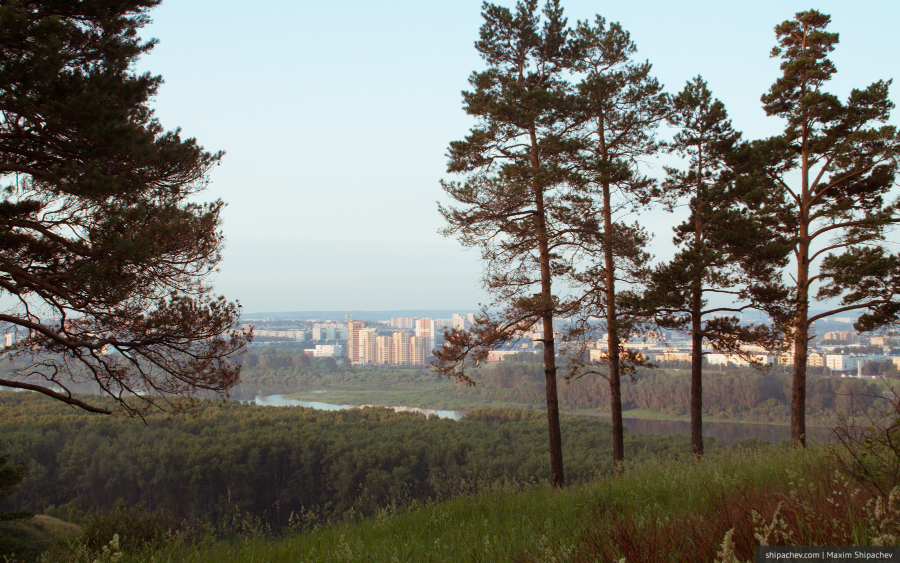
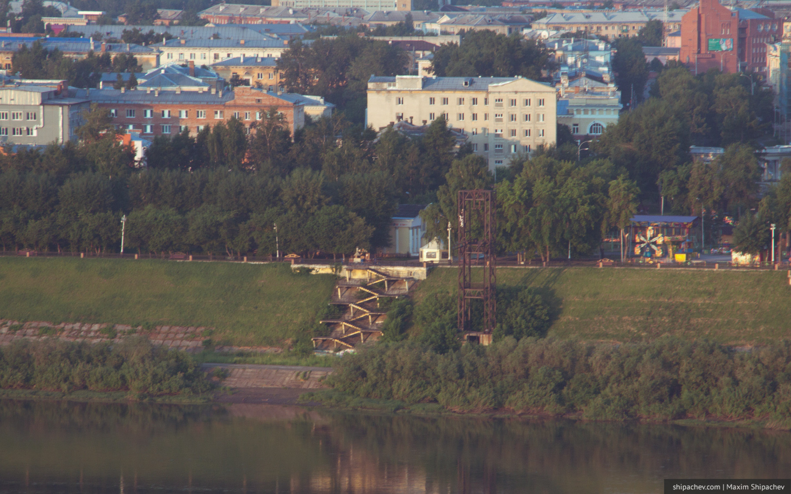
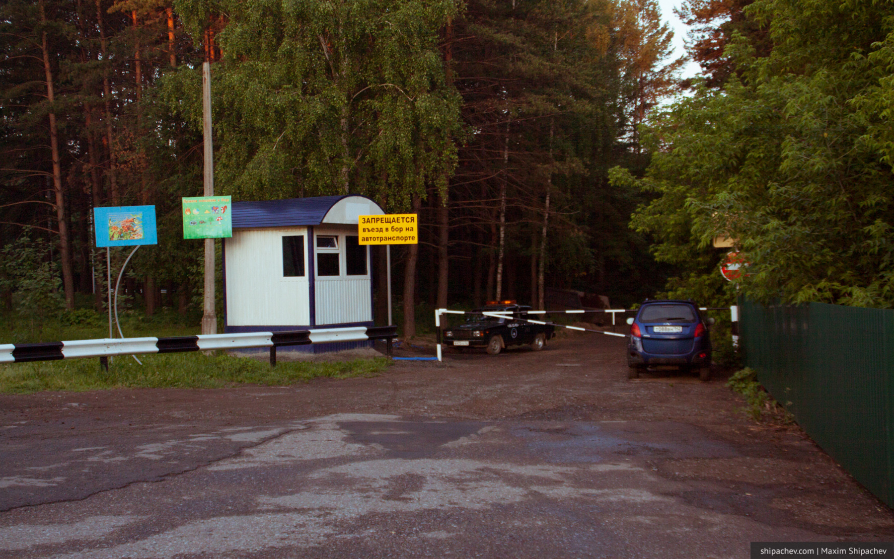
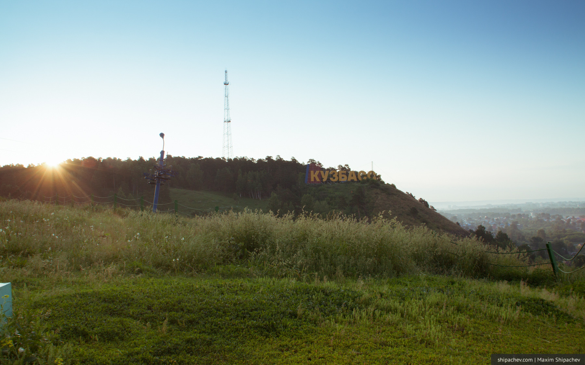
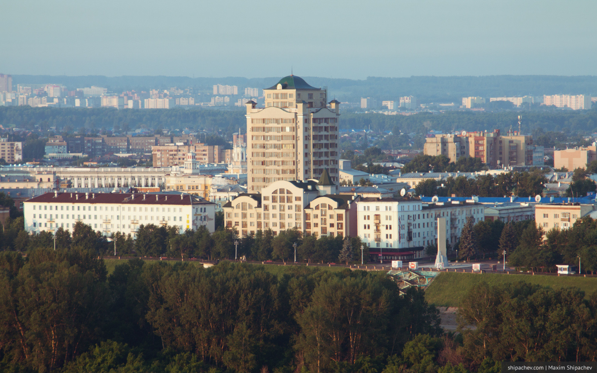
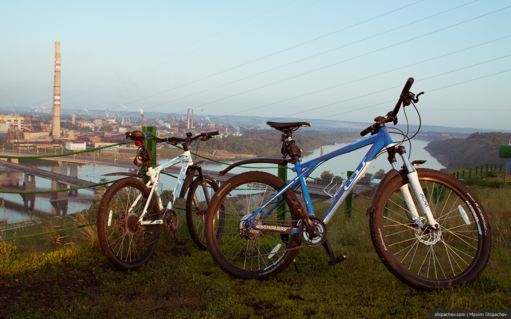
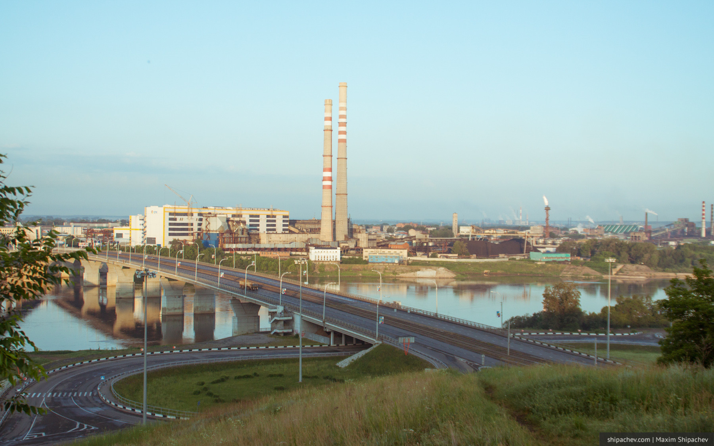
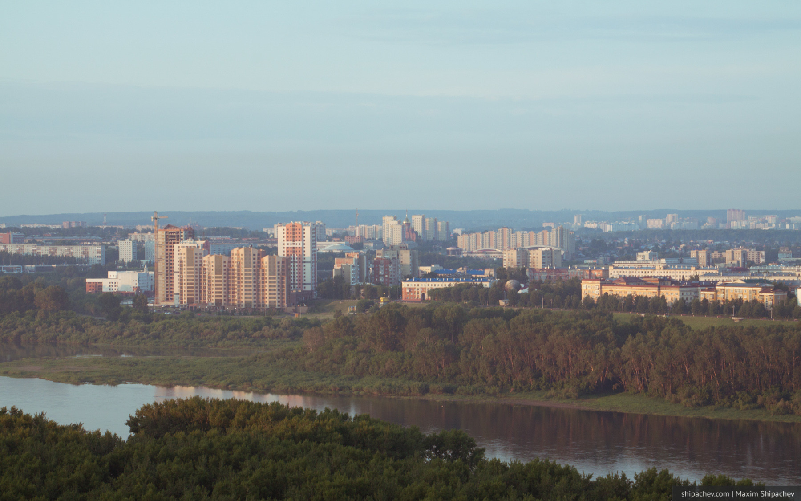

По условиям тестирования Билайна в Кемерово, последней локацией должна была быть местная достопримечательность на мой выбор. Конечно, я не мог пройти (и проехать) мимо соснового бора.
Город Кемерово, как известно, расположен на двух берегах Томи. Если взглянуть на город (или хотя бы на карту) сверху, то видно, что центр Кемерова занимает одна из природных достопримечательностей: сосновый бор. Кемеровчане по праву гордятся этим лесным массивом и называют его ласково — лёгкие города.

В бор летом кемеровчане любят выходить и выезжать на пробежку, а в зимний период катаются на лыжах. Лыжных трасс и тропинок в бору хватает на всех.
В коммунистические времена сюда даже хотели построить канатную дорога с левого берега, но не успели.

Ещё около 10 лет назад в сосновом бору жители города любили в свободное от работы время жарить шашлыки и пить спиртное. Но несколько лет назад власти ограничили въезд в бор автотранспорта и запретили разведение огня. Пить алкоголь пешком и без мяса желающих с тех пор не находится, и в бору теперь можно застать только любителей активного спорта.

На горе в южной части бора есть несколько достопримечательностей. Во-первых, это надпись «КУЗБАСС», которая ближе и роднее надписи HOLLYWOOD в противоположном конце света. Чтобы вандалы не нарушали целостность «КУЗБАССА», у надписи круглосуточно дежурят охранники. Во-вторых это Поклонный крест на горе, который в 2000-м году установили паломники.



Саму гору жалуют обладатели зеркальных фотокамер. Ведь отсюда открывается красивый вид на весь город Кемерово. Справа — индустриальные пейзажи кемеровской ГРЭС, Коксохима и АЗОТа, слева — центральная часть города, новостройки на Притомском, да и вообще вся левобережная часть до горизонта.


Тестировал скорость Билайна я, находясь на самой горе, поэтому она ожидаемо высока — 43,2 мегабита в секунду.